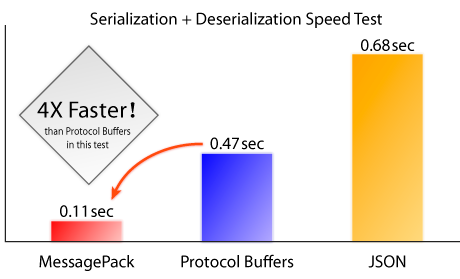

What's MessagePack?
MessagePack is a binary-based efficient object serialization library. It enables to exchange structured objects between many languages like JSON. But unlike JSON, it is very fast and small.
Typical small integer (like flags or error code) is saved only in 1 byte, and typical short string only needs 1 byte except the length of the string itself. [1,2,3] (3 elements array) is serialized in 4 bytes using MessagePack as follows:
> require 'msgpack' > msg = [1,2,3].to_msgpack #=> "\x93\x01\x02\x03" > MessagePack.unpack(msg) #=> [1,2,3]

In this test (source code), it measured the elapsed time of serializing and deserializing 200,000 target objects. The target object consists of the three integers and 512 bytes string.